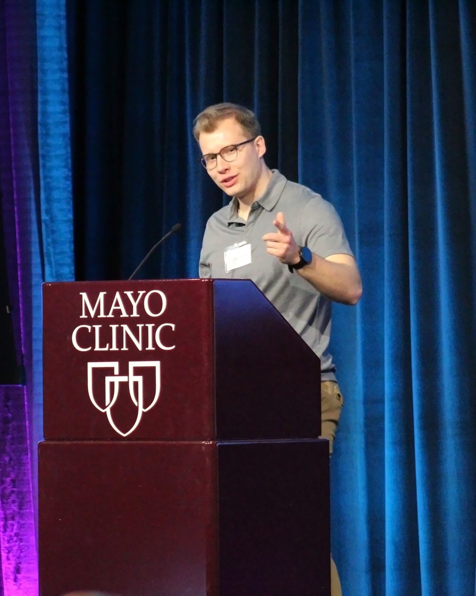

MY STORY
“A study isn't finished when it's published. It's finished when it reaches someone who can use it.”
Most of what we learn about muscle and aging never leaves the journals. It stays behind paywalls and on conference posters, out of reach. So the people who could use it look elsewhere, and what they find is supplement ads and gym myths. These are adults in their 40s and 50s who feel their strength starting to slip and want to know how to get it back.
That's why I write The Reserve: the science I do in the lab, in plain language, for the people who actually need it.